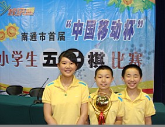

南通市首届“中国移动杯”小学生五子棋比赛拉开帷幕
#1 南通市首届“中国移动杯”小学生五子棋比赛拉开帷幕作者：有志青年 发表时间：2009-7-29 20:59:29
7月29日，由南通市学校体育协会主办，港闸区教育局承办的南通市首届“中国移动杯”小学生五子棋比赛在港闸区委党校拉开了帷幕，这是南通市学校体育协会成立以来举办的第一项赛事，来自全市22所学校的66名小选手参加了本次比赛。五子棋是中国棋院正式设立的棋类项目，简单易学，具有简便性和趣味性，对于开发学生的思维能力、想象力、创造力有着积极的作用，深受广大少年儿童的喜爱。近年来，港闸区在全面推进阳光体育运动，落实学校艺术体育“2+1”项目实验过程中，积极推广、普及五子棋运动，引导广大学生利用课余时间积极参加这项活动。不少学校还为学生配备了棋具，目前，五子棋已经在全区中小学校普遍开展起来。南通市教育局表示，今后将每年组织一次全市性（地级市）的小学生五子棋比赛，各区县教育局也现场表示，今后将组织全区县级的五子棋选拔工作。五子棋运动在南通的蓬勃开展指日可待。
照片稍后发布
［ 沙海一丽 于 2009-7-30 16:05:56 时花20金币送鲜花一朵］
#2 Re:南通市首届“中国移动杯”小学生五子棋比赛拉开帷幕作者：茗弈小刀 发表时间：2009-7-30 10:04:31
五子棋在南通少兒普及開來，發展勢頭也是值得欣喜的，這里為南通五子喝彩！
闸小－纪香昨天開門紅，取得3比0好成績，希望不驕不躁繼續堅持！
闸小－施令驰也取得好的成績。
 我這幾天打的字怎么變繁體了
我這幾天打的字怎么變繁體了
#3 Re:Re:南通市首届“中国移动杯”小学生五子棋比赛拉开帷幕作者：茗弈小刀 发表时间：2009-7-30 20:21:11
#4 Re:南通市首届“中国移动杯”小学生五子棋比赛拉开帷幕作者：黄药师 发表时间：2009-7-31 7:53:04
复古了！
#5 Re:南通市首届“中国移动杯”小学生五子棋比赛拉开帷幕作者：nara 发表时间：2009-7-31 8:33:39
发展的不错，祝贺！#6 Re:南通市首届“中国移动杯”小学生五子棋比赛拉开帷幕作者：雅匪 发表时间：2009-7-31 23:17:10
希望诞生又一个杭州